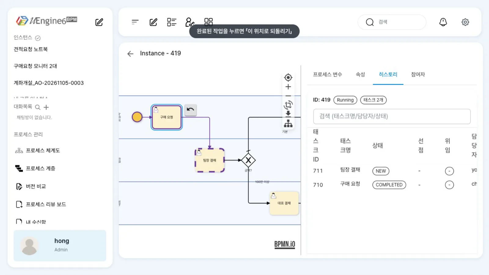
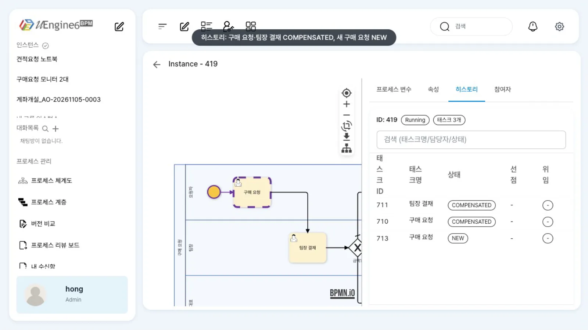
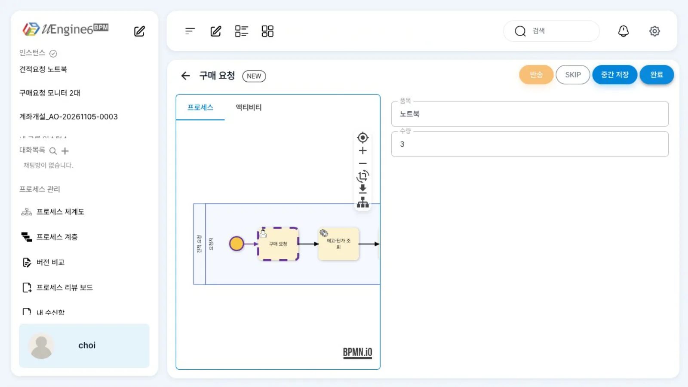
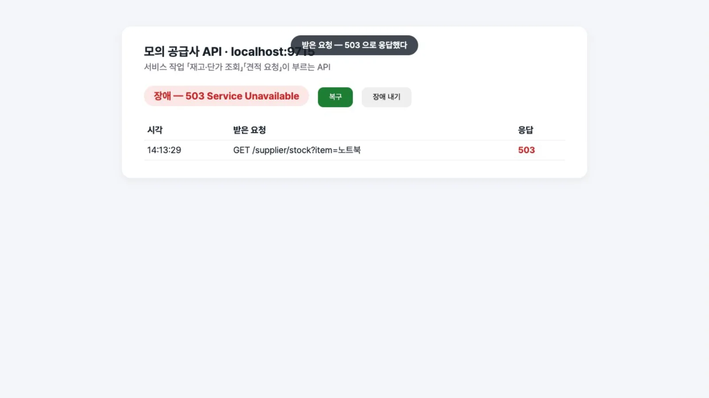
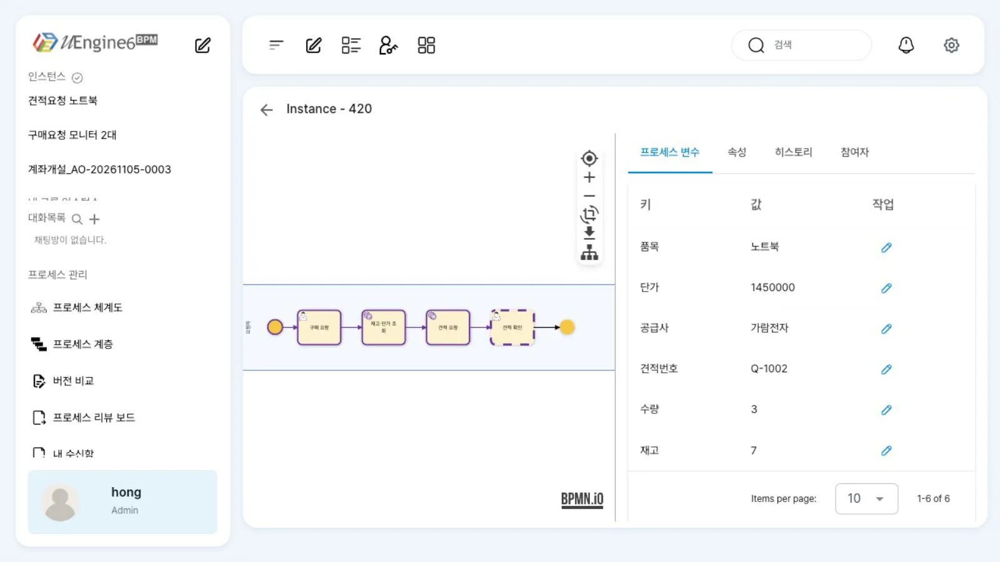

관리자 화면의 「이 위치로 되돌리기」로 진행 중인 인스턴스를 완료된 단계로 되돌립니다. 이어서 서비스 작업이 실패할 때의 동작을 확인합니다. 원인을 고친 뒤 같은 작업을 다시 완료해 이어 가는 방법과 실패를 업무로 처리하는 방법(오류 경계)도 살펴봅니다.
무엇을 · 왜#
되돌리기(Back To Here)는 실행 중인 인스턴스를 이미 지나온 작업으로 돌려보내는 관리 기능입니다. 지정한 작업과 그 이후에 거친 작업은 보상됨(COMPENSATED)이 되고, 지정한 작업이 새로 만들어져 원래 담당 레인에 배정됩니다. Camunda의 process instance modification과 비슷한 일을 하지만, BPMN 보상 핸들러(취소 작업)를 실행하지는 않습니다. 외부 시스템에 이미 반영된 일은 따로 되돌려야 합니다.
실패한 작업. 이 브랜치에서 서비스 작업(REST)·SQL 작업은 앞선 사람 작업의 「완료」 요청 안에서 동기로 실행됩니다. 서비스 작업이 실패하면 그 완료 요청 전체가 되돌려지고(HTTP 500), 인스턴스는 앞선 사람 작업에 그대로 머뭅니다. 「실패」 상태나 실패 사유는 인스턴스·히스토리 어디에도 남지 않습니다. 따라서 운영 중에는 두 가지 방법으로 대응합니다.
| 방법 | 언제 | 어떻게 |
|---|---|---|
| 원인을 고치고 다시 완료 | 일시 장애(상대 API 점검, 네트워크) | 완료 응답의 오류 메시지·서버 로그로 원인 확인 → 고친 뒤 같은 작업을 다시 「완료」 |
| 오류 경계로 업무화 | 실패해도 일을 이어 가야 할 때 | 서비스 작업에 오류 경계 이벤트를 붙여 「수기 처리」 작업으로 보냄 → 실패 행이 업무 목록에 Failed로 남음(실패 경로와 되돌리기) |
이 장에서는 두 가지 예제를 사용합니다.
튜토리얼/되돌리기/구매요청— 인스턴스 찾고 살피기와 같은 구매 요청(구매 요청 → 팀장 결재 → 「금액?」 → 발주).튜토리얼/되돌리기/견적요청— 구매 요청(최구매) → 서비스 작업 「재고·단가 조회」(GET) → 「견적 요청」(POST) → 견적 확인. 서비스 작업은 모의 공급사 API(localhost:9715)를 호출합니다.
따라 하기#
완료된 단계로 되돌리기#
- 인스턴스 열기. 모니터 2대(600,000원) 요청 건이 「팀장 결재」를 기다립니다. 요청 내용이 틀려 구매 요청부터 다시 받아야 합니다. 홍길동(
hong)으로 관리자 상세(/admin/<ID>)를 열면 「히스토리」에 구매 요청COMPLETED, 팀장 결재NEW가 있습니다. - 「이 위치로 되돌리기」. 그림에서 완료된 「구매 요청」을 누르면 옆에 컨텍스트 메뉴가 나옵니다. 여기서 「이 위치로 되돌리기」를 누릅니다(진행 중인 작업을 누르면 대신 「건너뛰기」가 나옵니다). 관리자 상세 화면은 10초마다 정보를 다시 읽고 그림을 현재 작업 쪽으로 옮기므로, 메뉴가 닫히면 다시 누르세요.

이 위치로 되돌리기 - 실행. 확인 창 「되돌리기」(「"구매 요청"으로 되돌리시겠습니까?」)에서 「실행」을 누릅니다(
POST /instance/<ID>/activity/Request/backToHere). - 결과. 상세 화면을 다시 열면 「구매 요청」이 현재 작업으로 바뀌어 있습니다. 「히스토리」에는 처음 구매 요청과 팀장 결재가
COMPENSATED, 새 구매 요청이NEW(최구매choi)로 남습니다. 최구매의 업무 목록에 「구매 요청」이 다시 도착합니다.
되돌린 뒤 히스토리
완료가 조용히 실패할 때#
- 장애 상태. 모의 공급사 API 화면에 「장애 — 503 Service Unavailable」이 떠 있습니다. 최구매가
튜토리얼/되돌리기/견적요청인스턴스의 「구매 요청」을 엽니다. 이 작업 다음은 서비스 작업 「재고·단가 조회」입니다. - 완료가 거절됨. 품목
노트북, 수량3을 넣고 「완료」를 누릅니다. 응답은 HTTP 500입니다. 화면에는 오류가 표시되지 않으며 작업은NEW그대로입니다. 브라우저 개발자 도구나 서버 로그에서 원인(503 Service Unavailable)을 확인합니다.
완료가 거절된 뒤 그대로인 작업 - 원인 고치기. 모의 API 화면의 받은 요청 목록에 503 응답이 기록되어 있습니다. 「복구」를 눌러 정상 상태(200)로 복구합니다. 실제 운영에서는 상대 시스템이 복구되기를 기다리거나 설정을 고칩니다.

모의 공급사 API — 받은 요청에 503 - 같은 작업을 다시 완료. 최구매가 같은 화면에서 「완료」를 다시 누르면 이번에는 200 응답을 받습니다. 서비스 작업 두 개가 차례로 실행되어 업무 목록에 「견적 확인」이 도착합니다.
- 결과 확인. 관리자 상세 화면의 「프로세스 변수」에 응답으로 받은 값이 있습니다(이 실행에서는
단가1450000,재고7,공급사가람전자,견적번호Q-1002). 「히스토리」에는 서비스 작업 「재고·단가 조회」「견적 요청」이 담당자는system, 상태는COMPLETED로 기록되지만, 실패했던 첫 시도는 남지 않습니다.
응답 값이 든 변수
설정 레퍼런스#
되돌리기 API#
curl -X POST http://localhost:9294/instance/<ID>/activity/<작업 id(tracingTag)>/backToHere -H "Authorization: Bearer $TOKEN"
| 상황 | 결과 |
|---|---|
| 완료된 사람 작업으로 | 200. 그 작업과 이후 작업이 COMPENSATED, 그 작업이 새로 생김 |
| 현재 진행 중인 작업으로 | 거절(Activity [Request] is already running) |
| 아직 실행되지 않은(실패로 멈춘) 서비스 작업으로 | 거절(Activity [Stock] is next for [Request]) |
서비스 작업이 실패했을 때 응답#
POST /work-item/<구매 요청 작업>/complete → 500
{"status":500,"error":"Internal Server Error",
"message":"... 503 Service Unavailable ...","path":"/work-item/<ID>/complete"}
인스턴스 상태는 Running, 작업은 NEW 그대로입니다. 오류 경계를 붙이지 않은 작업의 실패는 업무 목록·히스토리에 기록되지 않습니다.
이 장의 서비스 작업(발췌)#
{"_type": "org.uengine.kernel.bpmn.ServiceTask",
"uriTemplate": "http://localhost:9715/supplier/stock?item=<%=품목%>", "method": "GET",
"headers": [{"name": "Content-Type", "value": "application/json", "_type": "org.uengine.kernel.bpmn.HttpHeader"}],
"outputMapping": {"mappingContext": {"mappingElements": [
{"argument": {"text": "단가"}, "variable": {"name": "[arguments].price"}, "direction": "out"},
{"argument": {"text": "공급사"}, "variable": {"name": "[arguments].supplier.name"}, "direction": "out"}]}}}
설정 방법은 REST API 부르기에 있습니다.
알려진 제약#
- 관리자 「건너뛰기」는 남의 작업에 쓸 수 없습니다. 진행 중인 작업의 컨텍스트 메뉴 「건너뛰기」는 관리자라도 작업 주인이 아니면
403 No permission to skip this task입니다. 작업 주인이 업무 화면에서 「SKIP」을 누르게 합니다(반송과 SKIP). - 되돌리기는 BPMN 보상 핸들러를 실행하지 않습니다. 외부 시스템의 취소 작업은 따로 처리합니다.
- 서비스 작업 실패는 화면에 표시되지 않고 상태로 남지 않습니다. 실패를 추적해야 하는 작업에는 오류 경계를 붙이세요.
확인 문제#
서비스 작업이 실패해 「구매 요청」에 멈춘 인스턴스를 「재고·단가 조회」로 되돌리면 다시 실행되나요?
아닙니다. 그 서비스 작업은 아직 실행된 적이 없어 되돌릴 대상이 아니며(is next for), 현재 진행 중인 「구매 요청」으로 되돌리는 것도 거절됩니다. 원인을 고친 뒤 「구매 요청」을 다시 완료하면 됩니다.
되돌린 뒤 히스토리에 남는 `COMPENSATED`는 무엇을 뜻하나요?
되돌리기로 무효가 된 작업입니다. 기록은 지워지지 않고 상태만 바뀝니다. 같은 이름의 작업이 NEW 상태로 새로 만들어집니다.
공급사 API가 자주 멈춘다면 어떻게 설계하나요?
「재고·단가 조회」에 오류 경계 이벤트를 붙여 「수기 단가 입력」 같은 사람 작업으로 보냅니다. 그러면 실패가 업무 목록에 Failed 행으로 남고, 담당자가 수기로 이어 갑니다(실패 경로와 되돌리기).